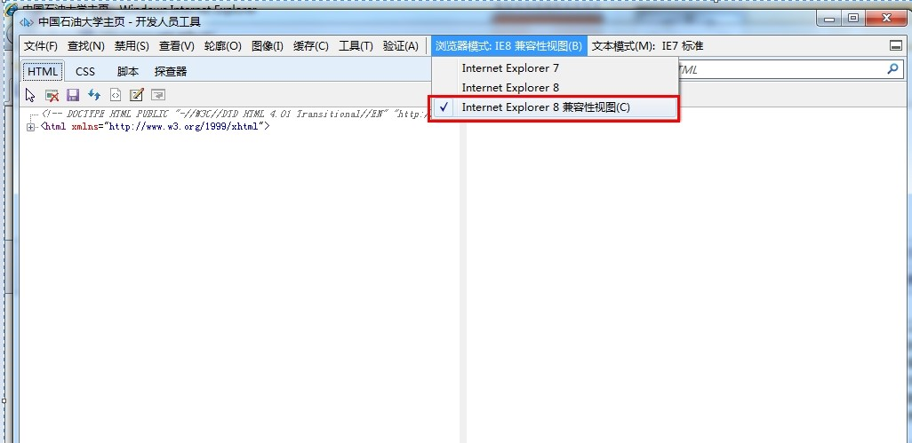
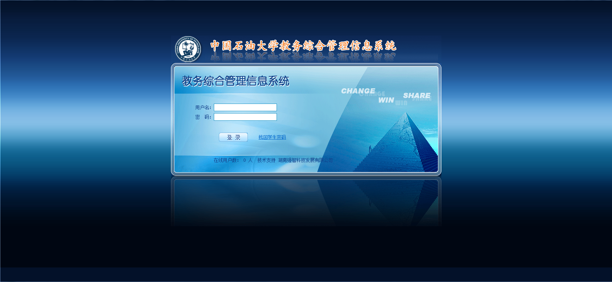
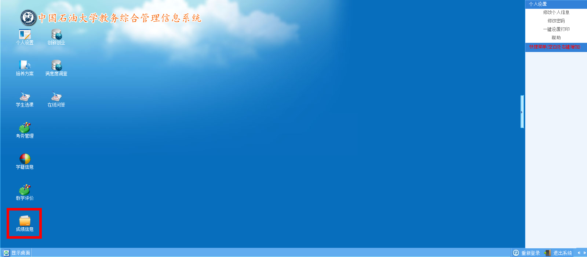
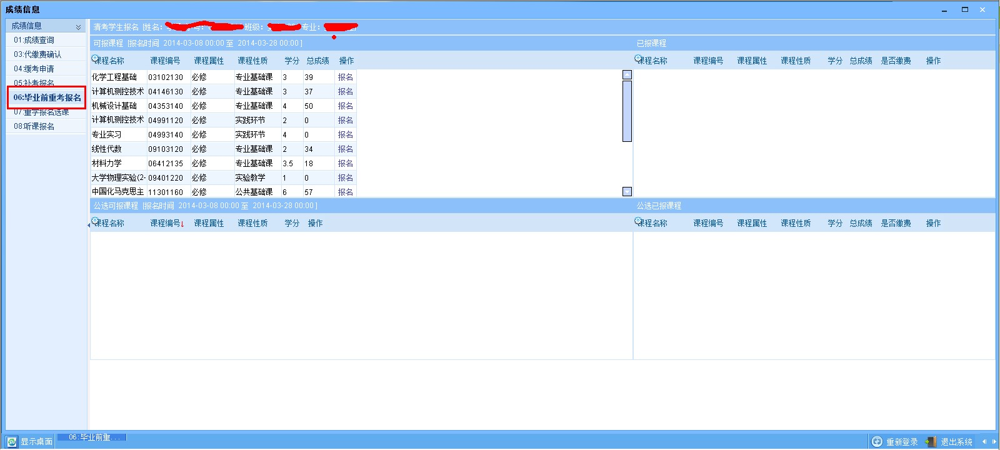
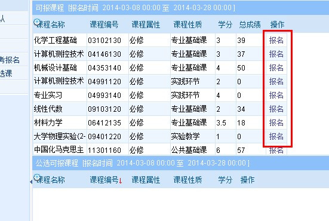
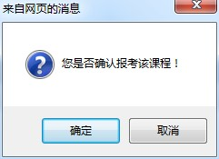
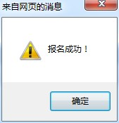
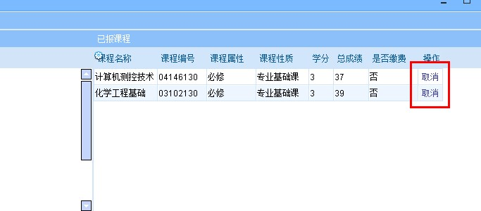
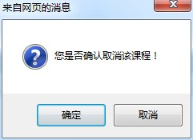

学生毕业前重考报名流程图
系统提示：
关于浏览器兼容的解决办法，如果你使用的电脑是win7或者IE浏览器版本超过IE8，请进入教务系统后按F12进入开发人员工具——工具栏右侧的“浏览器模式”选择IE8。如下图所示。

毕业前重考办理手续
——针对以下两种情况：
① 预计毕业生（含双学位预计毕业生）中所有未通过的必修课、未通过的专业限选类别中的必修课程（含学生转专业、降级等学籍异动原因导致教学计划变更以及已经办理缓考，需要补学但在本学期没有补学机会的课程）；
② 结业生所有未通过的必修课、未通过的专业限选类别中的必修课程。
登录系统。

选择“成绩信息”。 如下图。

选择“06：毕业前重考报名”。 如下图。

在“可报课程”中，对需要本学期重考的课程，选择“报名”即可。在学校规定报名时间内，可以自由报名。如下图。

点击报名后，出现如下图对话框。

确定报名后，点击确定，则出现下图，表示报名成功。

如果在报名期间，可对已报课程进行“取消”操作。请慎重操作，一旦因为误操作导致毕业前重考考试机会丢失，后果自负。

再次确认是否取消所报课程的考试。

确定取消后，点击确定，则出现下图，表示取消报名成功。
如果在“可报课程”尚未出现的课程（如部分专业中专业选修课，即限选中的必选课程），请以班级为单位登记至学院教学办（报名选课列表见附件4），学院教学办会统一处理报名。
备注：报名后不参加考试者，一律按照“0”分，缺考记录。
报名结束后，按照学院要求和收费办法统一缴费即可。登录教务管理系统,“是否报名”、“是否缴费”项均已“√”，则为该课程办理重考证成功，等待学院发放“重学证”即可。
在报名截止之前，如果尚未收到学院发放的“重考证”；并且学生系统中报名后，“是否报名”为“√”但“是否缴费”仍然为“×”，那么请务必到学院教学办公室核实情况，再次确认报名，否则视为该课程的重考证报名不成功，后果自负
特别提示：办理重考证后，务必好好复习，准备考试相关事宜。否则，你会遗憾的。。。。
再次提醒报名条件：
① 未做毕业设计的学生不能参加本次考试；
② 无未及格必修课程的学生不能参加本次考试；
③ 体育、实习以及实践性教学环节不能参加本次考试。